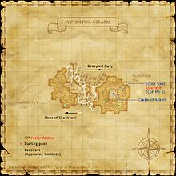

Description
Attohwa Chasm is an outdoor area in Aragoneu.
Map

Involved in Quests / Missions
| Quest / Mission | Type | Starter | Location |
|---|---|---|---|
| One Good Deed? | Map | Chipmy-Popmy | Port Windurst (C-8) |
| Tea with a Tonberry? | General | Sobane | Southern San d'Oria (D-6) |
NPCs
Notorious Monsters
| Name | Level | Drops | Steal | Family | Spawns | Notes |
|---|---|---|---|---|---|---|
| Alastor Antlion | 83 | Antlion Jaw Rostrum Pumps | — |  AntlionsImage source AntlionsImage source | — | Spawned: Trade Antlion Trap to ??? @ (F-10) to spawn Feeler Antlion and Executioner Antlion, and ultimately, Alastor Antlion.; A, L |
| Ambusher Antlion | 68-70 | Antlion Jaw Archer's Jupon | — | AntlionsImage source | — | Spawned: Lottery spawn from Trench Antlion.; A, H, L |
| Citipati | 67-70 | Corse Bracelet Druid's Slops Harpe | — |  CorsesImage source CorsesImage source | — | During 20:00-4:00; A, H, HP |
| Sargas | 77-78 | Aptant: Primus Aptant: Aecus | — |  ScorpionsImage source ScorpionsImage source | — | A, L, H, Sc |
| Tiamat | 95 | Beetle Blood Behemoth Hide Damascene Cloth Damascus Ingot Divine Log Dragon Blood Dragon Heart Dragon Talon Herald's Gaiters Malboro Fiber Noritsune Kote Oxblood Wyrm Horn | — |  WyrmsImage source WyrmsImage source | — | Respawn: 3-8 days; A, T(S) |
| Xolotl | 80-81 | Bandomusha Kote Perseus's Harpe Zoolater Hat | — | CorsesImage source | — | Assisted by: Xolotl's Hound Warrior; Assisted by: Xolotl's Sacrifice; During 20:00-4:00; Respawn: 21-24 hr; A, L, H, HP |
Regular Monsters


Event Monsters
| Name | Level | Drops | Steal | Family | Spawns | Notes |
|---|---|---|---|---|---|---|
| Lioumere | ~55 | — | — | AntlionsImage source | 1 | Spawned: The Road Forks; A |
Story walkthroughs in this area
| Story | Mission / quest |
|---|---|
| CoP 3-3B | Memories of a Maiden — Windurst branch |
| CoP 5-3U | Where Messengers Gather — Ulmia’s Path |
References
External references describe their own server or retail rules. Documented Zenith changes take precedence.
Map credits: Map 1 — HorizonXI Wiki. Original game maps © SQUARE ENIX; redrawn maps retain the credited authorship and license.

Supplemental NPC names and exits are from the base-world snapshot; expansion conditions can affect availability.
Additional level-75 reference


Attohwa, meaning arid in ancient Mithra, is the name given to the chasm that traverses the eastern part of Aragoneu. As the name suggests, very little rain falls here, resulting in a parched, broken land where poisonous gases erupt from cracks in the earth. However, many unique forms of life have adapted to this harsh environment, ranging from the ant lions that forage for prey hiding under the ground, to the beautiful yet deadly gasponia flowers that feed on the noxious fumes. Until recently, several forbidding cliffs had to be scaled in order to reach Attohwa Chasm, but due to the discovery of an underground route by a mountaineer, it is now possible for adventurers to travel to this inhospitable area with relative ease. According to Mithran folklore, the mountaineer who discovered this route went in search of Parradamo Tor, a hill said to be found somewhere in the chasm, and was never heard from again...
This area is only accessible if the Chains of Promathia expansion is installed.
Connecting Areas
- Boneyard Gully: H-6
- Maze of Shakhrami: G-10
Involved in Quests/Missions
| Quest | Type | Starter | Location |
| One Good Deed? | Maps | Chipmy-Popmy | Port Windurst (C-8) |
| Tea with a Tonberry? | General | Sobane | Southern San d'Oria (D-6) |
| The Gobbiebag Part VI | Gobbiebag | Bluffnix | Lower Jeuno (H-9) |
| Mission | Country | Starter | Location |
| Mission 3-3: Road Forks | Promathia | --- | --- |
| Mission 5-3: Three Forks | Promathia | --- | --- |
Excavating
|
NPCs Found Here
Possible Weather Conditions
| ||||||||||||||||||||||||||||||||||||
Notorious Monsters Found Here
| Name | Level | Drops | Steal | Family | Spawns | Notes |
|---|---|---|---|---|---|---|
Citipati
|
67-70 | Corse Bracelet Druid's Slops Harpe |
Corses | 1 | A, H, HP | |
Lioumere
|
~55 | Antlions | 1 | A | ||
| Tiamat
|
95 | Beetle Blood Behemoth Hide Damascene Cloth Damascus Ingot Divine Log Dragon Blood Dragon Heart Dragon Talon Herald's Gaiters Molybdenum Ore Noritsune Kote Oxblood Wyrm Horn |
Dragons | 1 Respawn: 3-8 days |
A, T(S) | |
Xolotl
|
80-81 | Bandomusha Kote Perseus's Harpe Zoolater Hat |
Corses | 1 Respawn: 21-24 hr |
A, L, H, HP | |
Xolotl's Hound Warrior
|
72 | Skeletons | 1 | A, L, H, HP | ||
Xolotl's Sacrifice
|
72 | Skeletons | 1 | A, L, H, HP | ||
| Ambusher Antlion
|
Archer's Jupon | Antlions | 1 | A, L | ||
Feeler Antlion
|
Antlions | 1 | A, L | |||
Executioner Antlion
|
Antlions | 8 | A, L | |||
Alastor Antlion
|
Rostrum Pumps | Antlions | 1 | A, L |
|
HP = Detects Low HP; M = Detects Magic; Sc = Follows by Scent; T(S) = True-sight; T(H) = True-hearing JA = Detects job abilities; WS = Detects weaponskills; Z(D) = Asleep in Daytime; Z(N) = Asleep at Nighttime |
Mobs Found Here
|
HP = Detects Low HP; M = Detects Magic; Sc = Follows by Scent; T(S) = True-sight; T(H) = True-hearing JA = Detects job abilities; WS = Detects weaponskills; Z(D) = Asleep in Daytime; Z(N) = Asleep at Nighttime |
Adapted from Eden Wiki: Attohwa Chasm · Contributors and history · CC BY-SA 4.0. Revision 45810. Layout, links and optional background text adapted for Zenith.